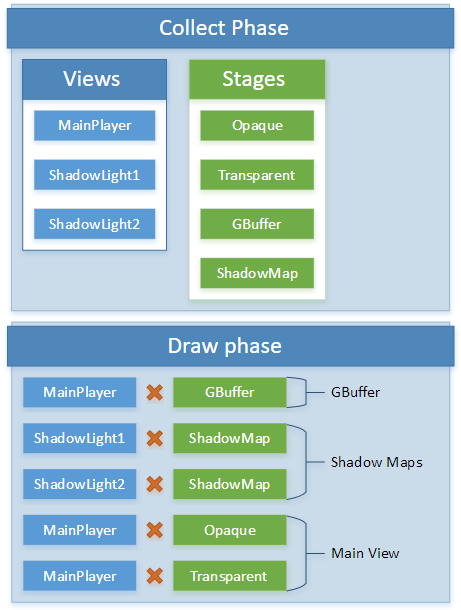

レンダーの機能
RenderFeature は、指定されたタイプの RenderObject の描画を担当します。
レンダーフェーズ
レンダー機能は、いくつかのフェーズを持ちます。
収集（Collect）
収集（collection） フェーズでは、何を処理してレンダリングする必要があるかを決定します。 これは通常、グラフィックス コンポジターによって行われます。
収集フェーズの内容は以下の通りです。
- レンダービューを作成し、ビューや投影行列などの最新のデータで更新する。
- レンダーステージを作成し、セットアップする。
- 可視物のカリングと並べ替えを行う。
抽出（Extract）
抽出（extract） フェーズでは、先に収集したオブジェクトのゲームステートから、レンダー固有の短命な構造体にデータをコピーします。これは通常、RenderSystem と RenderFeature によって行われます。
ゲームの更新やスクリプトがブロックされるため、できるだけ速く、できるだけ重い計算をしないようにします。重い計算は準備に回すべきです。
Note
今のところ、Stride ではゲームの更新やスクリプトの並列化は行っていないため、準備（prepare） と 描画（draw） のフェーズが終了するまでブロックは解除されません。
タスクの例：
- オブジェクトの行列のコピー
- マテリアルパラメーターのコピー
準備（Prepare）
準備（prepare） フェーズでは、GPU リソースを準備し、重たい計算を行います。 これは通常、RenderSystem と RenderFeature によって行われます。
タスクの例：
- ライティングのデータ構造体の計算
- 定数バッファとリソーステーブルへの書き込み
描画（Draw）
描画（draw） フェーズでは、GPU のコマンドリストを埋めます。
タスクの例：
- レンダーテクスチャーのセットアップ
- レンダービューとレンダーステージを組み合わせて描画
例
収集（collection） フェーズで作成され、描画（draw） フェーズで使用されるビューとステージの典型的な例を示します。

パイプライン プロセッサー
パイプラインプロセッサー（Pipeline processors） は、パイプライン ステートを作る際に呼び出されるクラスです。これにより、特定のレンダーステージでアルファブレンディングやワイヤーフレームレンダリングを有効にするといったことが可能になります。
Stride には、定義済みのパイプラインプロセッサーがいくつか含まれています。 また、自分で作成することもできます。